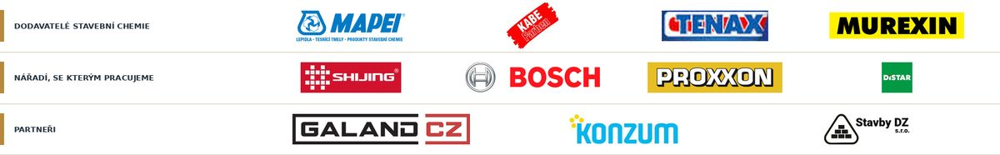

Precizní obklady. Dokonalý detail.
Koupelny, dlažby a velkoformáty ve východních Čechách. Každou spáru, roh a niku řešíme tak, aby vydržely a vypadaly čistě i po letech.
Co pro vás uděláme
Od jedné stěny po celou koupelnu. Připravíme podklad, položíme, zaspárujeme a předáme s protokolem.
Obklady a dlažby
Pokládka na stěny i podlahy, včetně přípravy podkladu, nivelace a penetrace. Standardní i nadstandardní formáty.
Koupelny na klíč
Spádování sprchového koutu, hydroizolace, žlaby a odtoky, niky, obklady až po zaspárování a silikony.
Velkoformátové desky
Desky do 120×280 cm a větší, včetně výřezů a speciálního lepení. Pracujeme ve dvou lidech s manipulátorem.
Hydroizolace a sprchové kouty
Vodotěsná vrstva v koutech, prostupech i nikách, ověřená zkouškou těsnosti.
Dekorativní stěrky
Betonové a mikrocementové povrchy na stěnách a podlahách.
Naše realizace
Fotografie z hotových zakázek. Každou kategorii doplníme, jakmile pošlete fotky.
Jolly a kamenické rohy
Roh se řeže pod úhlem 45° z jednoho kusu obkladu. Kresba a barva plynule pokračují přes hranu, bez lišty.
Jolly roh
Čistý přechod, žádný cizí materiál. Náročnější na řezání a čas.
Lišta
Rychlejší a levnější. Lišta zůstává vidět a časem se může poškodit.
Jak probíhá spolupráce
- KontaktPošlete popis a fotky.
- ZaměřeníPřijedeme, zaměříme, probereme materiály.
- Cenová nabídkaRozepsaná po položkách.
- RealizaceČistá práce a pravidelná komunikace.
- PředáníPředávací protokol a záruka.
Materiály a partneři
Pracujeme s prověřenou stavební chemií a nářadím a spolupracujeme s firmami, na které se můžeme spolehnout.

O nás
JL-OBKLADY je malá firma, kde zakázku od zaměření po předání vede jeden člověk a pracujeme ve dvou. Díváme se na detail, používáme prověřené materiály a vždy předem řekneme, co a proč stojí tolik.
Nezávazná poptávka
Napište, co potřebujete. Ozveme se do dvou pracovních dnů.
Telefon: +420 725 967 231
E-mail: jlobklady@gmail.com
Lázeňská 59, 561 12 Brandýs nad Orlicí